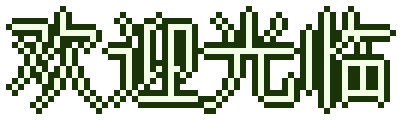

★☆ 欢迎光临 像素日常 ☆★ 这里是 2000 年代风格的复古入口 ☆★ 博客首页在 pixel-daily-blog.app.workbuddy.host ☆★ 记录清羽墨染的每一天 ☆★
★☆ 欢迎光临 像素日常 ☆★ 这里是 2000 年代风格的复古入口 ☆★ 博客首页在 pixel-daily-blog.app.workbuddy.host ☆★ 记录清羽墨染的每一天 ☆★



清羽墨染的日常小窝 · 建站于 2026 年 9 月 30 日
EST. 2026.09.30 / RETRO ENTRANCE
0000001
像素计数器 · 本站开站第 1 天
▶ 进入博客 ◀这里只是入口彩蛋，随时可以从站内页脚的「复古入口」回到这里。
最佳浏览分辨率 800×600 · 建议使用 IE 5.0+
本站使用 FrontPage 制作 · 版权所有 清羽墨染